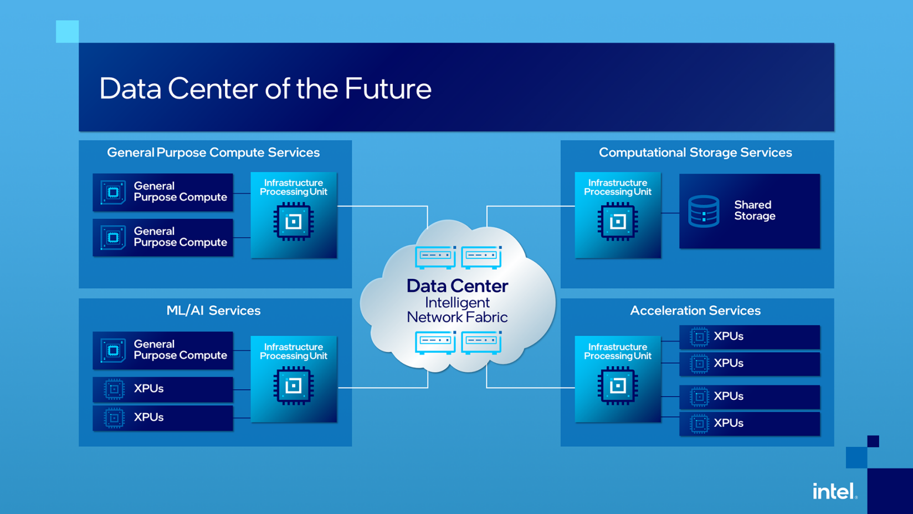
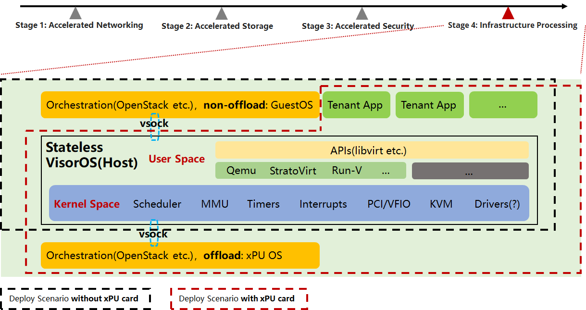

Unified Virt Architecture

0. Intel’s DataCenter of Future

I. Unified Architecture Conception

- Key Points
- Decoupling orchestration with the hypervisor, VisorOS to be a custom hypervisor dedicated OS(ecological closure)
- Stateless VisorOS, which run in memory(only kernel and initrd), upgrade within reboot
- Offload and non-offload with symmetric architecture
II. Unified Architecture Implementation
- APIs: remote control with vsock
- Stateless(Immutable) OS
- IBM’s RedHat, CoreOS
- SuSE, MicroOS
- Ubuntu, Core
- Microsoft’s Kinvolk, Flatcar
- AWS, Bottlerocket
- Intel, Clear Linux
- Offload SDK